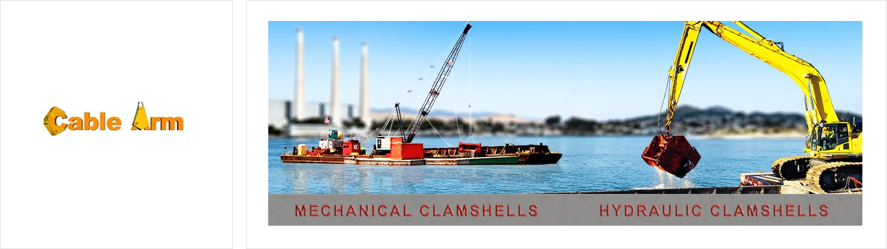
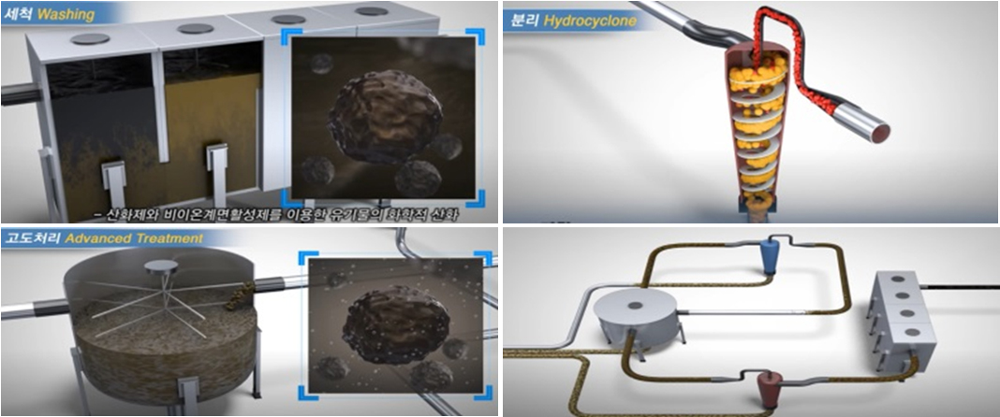
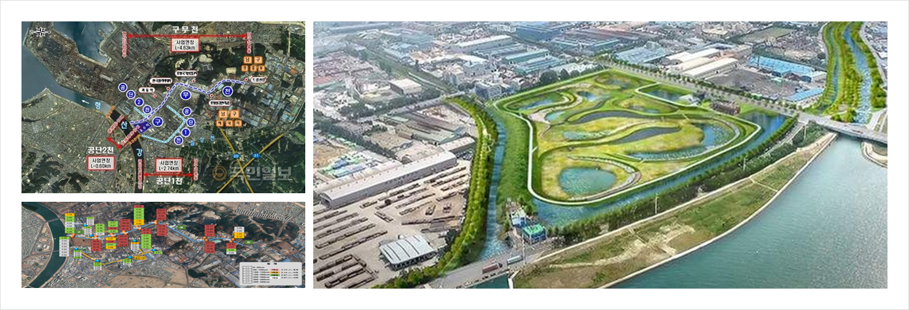

공정 그림(세척 · 분리 하이드로사이클론 · 고도처리 · 배관 계통) 3D 개념 모델 · 교반기·레이크·슬러리 흐름 애니메이션 · 드래그 회전 · 구성 클릭 = 정보
토양환경·자원순환 / 퇴적토·자원순환
오염퇴적물을 준설·분급·정화하는 기술과 장비를 바탕으로 하천과 수환경의 회복을 지원합니다.
세척·분리시설 처리용량 · 구무천 사례에 소개된 시설 기준, 전사 처리실적 아님
폐기물 종합재활용의 구체적인 허가·처리 범위는 확인 후 기재합니다. 정화 과정의 분리물 처리 설명을 재활용 허가나 모든 폐기물의 처리 역량으로 확대하지 않습니다.
공식 자료


오염퇴적물을 준설하고 입자 크기에 따라 분급해 후속 정화공정으로 연결합니다. 오염물질과 퇴적토의 특성에 맞춰 처리공법과 최종 처리 경로를 검토합니다.
케이블 암 환경준설 장비와 수저오염퇴적물 정화처리 시스템을 보유합니다. 미세기포·계면활성제·산화제를 복합적으로 활용해 오염물질의 분리·제거를 돕습니다.
구무천 수은오염 퇴적토 정화사업에 수은오염퇴적물 정화시스템을 적용했습니다. 공식 실적에는 포항시 소재 현장의 반출정화·세척 공법이 소개되어 있습니다.